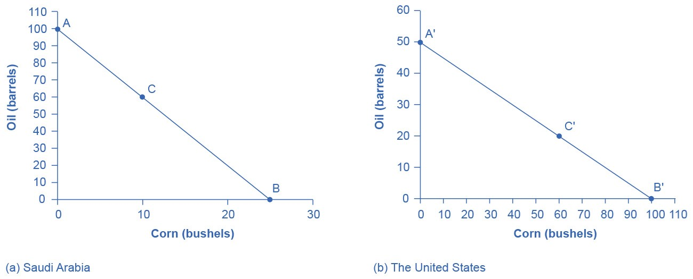
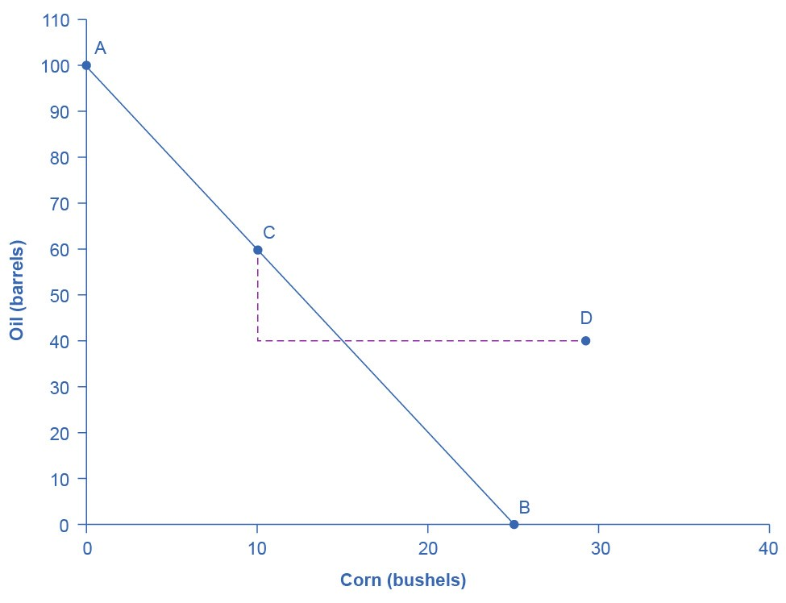
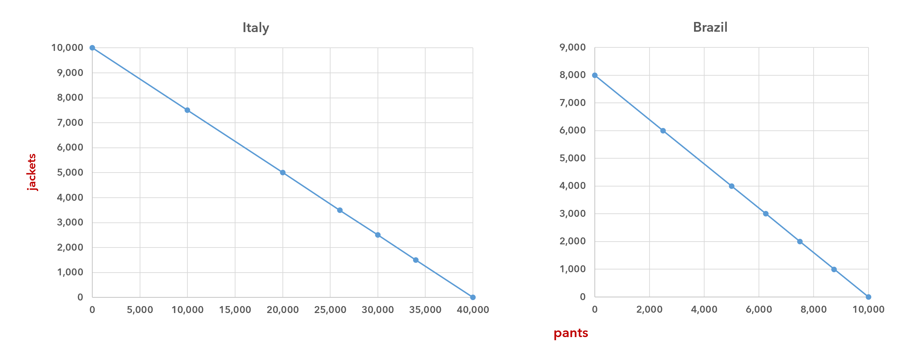

International trade
The first wave of globalization started in the nineteenth century and lasted up to the beginning of World War I. Over that time, global exports as a share of global gross domestic product (GDP) rose from less than 1% of GDP in 1820 to 9% of GDP in 1913. As the Nobel Prize-winning economist Paul Krugman of Princeton University wrote in 1995:
It is a late-twentieth-century conceit that we invented the global economy just yesterday. In fact, world markets achieved an impressive degree of integration during the second half of the nineteenth century. Indeed, if one wants a specific date for the beginning of a truly global economy, one might well choose 1869, the year in which both the Suez Canal and the Union Pacific railroad were completed. By the eve of the First World War steamships and railroads had created markets for standardized commodities, like wheat and wool, that were fully global in their reach. Even the global flow of information was better than modern observers, focused on electronic technology, tend to realize: the first submarine telegraph cable was laid under the Atlantic in 1858, and by 1900 all of the world’s major economic regions could effectively communicate instantaneously.
This first wave of globalization crashed to a halt early in the twentieth century. World War I severed many economic connections. During the Great Depression of the 1930s, many nations misguidedly tried to fix their own economies by reducing foreign trade. World War II further hindered international trade, and global flows of goods and financial capital were rebuilt only slowly afterwards. It was not until the early 1980s that global economic forces again became as important, relative to the size of the world economy, as they were before World War I.
Absolute and comparative advantage
The American statesman Benjamin Franklin (1706–1790) once wrote, “No nation was ever ruined by trade.” Many economists would express their attitude toward international trade in an even more positive manner. The evidence that international trade confers overall benefits on economies is strong. Trade has accompanied economic growth in the United States and around the world. Many of the national economies that have shown the most rapid growth in the last fifty years—for example, Japan, South Korea, China, and India—have done so by dramatically orienting their economies toward international trade. There is no modern example of a country that has shut itself off from world trade and yet prospered. To understand the benefits of trade, or why we trade in the first place, we need to understand the concepts of comparative and absolute advantage.
In 1817, David Ricardo, a businessman, economist, and member of the British Parliament, wrote a treatise called On the Principles of Political Economy and Taxation. In this treatise, Ricardo argued that specialization and free trade benefit all trading partners, even those that may be relatively inefficient. To see what he meant, we must return to the distinction between absolute and comparative advantage.
A country has an absolute advantage over another country in the production a good if it uses fewer resources to produce that good (or, assuming equal access to resources, if the country can produce more of the good). Absolute advantage can be the result of a country’s natural endowment. For example, extracting oil in Saudi Arabia is pretty much just a matter of drilling a hole somewhere. Producing oil in other countries can require considerable exploration and costly technologies for drilling and extraction—if they have any oil at all. The United States has some of the richest farmland in the world, making it easier to grow corn and wheat than in many other countries. Guatemala and Colombia have climates especially suited for growing coffee. Chile and Zambia have some of the world’s richest copper mines. When each country has a product that others need, and it can produce the product with fewer resources, it is easy to imagine all parties benefiting from trade. However, thinking about trade just in terms of geography and absolute advantage is incomplete. Successful trading actually occurs because of comparative advantages.
A country has a comparative advantage when it can produce a good at a lower opportunity cost than some other country. The country with the comparative advantage gives up less of good A to produce good B.
Now, let’s apply these concepts to international trade.
Absolute advantage, comparative advantage, and trade
Consider a hypothetical world with two countries, Saudi Arabia and the United States, and two products, oil and corn. Further, assume that consumers in both countries desire both of these goods. These goods are homogeneous, meaning that consumers and producers cannot tell the difference between corn or oil from either country. All corn producers supply the same corn, and all oil producers supply the same oil. Of course, both countries must have all of the resources for producing oil and corn, but we will imagine that labor is the only required resource, which we will count as “labor hours.” Table 1 gives the barrels of oil and the bushels of corn that can be produced by each country in one hour.
| country | oil (hours per barrel) | corn (hours per bushel) |
|---|---|---|
| Saudi Arabia | 1 | 4 |
| United States | 2 | 1 |
Saudi Arabia has an absolute advantage in oil production. While it takes the U.S. two hours to produce a barrel of oil, Saudi Arabia can do it in one hour. The United States, however, has an absolute advantage in corn production. The U.S. can produce a bushel of corn in one hour; whereas, the same bushel takes Saudi Arabia four hours.
Let’s also say that Saudi Arabia and the United States each have 100 labor hours available per week (for instance, maybe each has ten workers who do ten hours of work per week or five who do 20—or any combination that adds up to 100 hours). So, if Saudi Arabia uses all 100 labor hours to produce oil, it can produce 100 barrels per week. If it uses all 100 labor hours to produce corn, it can produce 25 bushels per week. (In Saudi Arabia, 1 bushel takes 4 hours to produce, and so with 100 hours, 25 can be produced.)
The U.S., meanwhile, can produce 50 barrels of oil if it uses all of its labor hours for that purpose, and it can produce 100 bushels of corn if it uses all 100 hours there. These values and some of the possible combinations of both goods that each country can produce with its 100 labor hours are listed in table 2.
| Saudi Arabia (100 labor hours) | United States (100 labor hours) | ||
|---|---|---|---|
| oil (barrels) | corn (bushels) | oil (barrels) | corn (bushels) |
| 100 | 0 | 50 (100 hours) | 0 |
| 60 | 10 (40 hours) | 40 (80 hours) | 20 |
| 40 | 15 (60 hours) | 20 (40 hours) | 60 |
| 20 | 20 (80 hours) | 10 (20 hours) | 80 |
| 0 | 25 (100 hours) | 0 | 100 |
As you may recall from the production possibilities frontier page, the PPF is the curve that represents all of the possible combinations of two goods that a country can produce, given its limited resources. The PPFs for Saudi Arabia and the United States are given in figure 1.(1)
-
Earlier, we said that we typically expect a PPF to be convex. This is because, as resources are moved toward the production of one good and away from the production of the other, the resulting increases and decreases in production are not proportional, especially if a country gets close to using almost all of its resources to produce one of the two goods.
The PPFs that we will examine on this page will be straight lines, however. This is not realistic—it assumes that all resources are perfectly interchangeable—but it will make the analysis here much simpler without affecting our application of the concepts absolute and comparative advantage.

If it produces only oil, then Saudi Arabia can produce 100 barrels of oil and zero bushels of corn (point A). Alternatively, if it produces only corn, it can produce 25 bushels of corn and zero barrels of oil (point B). It can also produce other combinations of oil and corn if it wants to consume both goods, such as at point C. Here, it produces (and consumes) 60 barrels of oil, leaving 40 labor hours that are spent on the production of 10 bushels of corn.
If the United States produces only oil, it can produce, at most, 50 barrels. This is point A′. At the other extreme, it can produce 100 bushels of corn and no oil (point B′). Other combinations of both oil and corn are possible, such as point C′.
All points to the right of each country’s PPF are impossible for that country to produce, given its current level of resources and technology.
Saudi and U.S. consumers desire both oil and corn. Let’s say that before trade occurs, both countries produce and consume at points C and C′. Thus, before trade, the Saudi Arabian economy will devote 60 labor hours to producing oil, which will yield 60 barrels of oil (in bold on the left side of table 2). With the remaining 40 labor hour (since it needs four hours to produce a bushel of corn), it can produce only 10 bushels. To be at point C′, the U.S. devotes 40 labor hours to producing 20 barrels of oil, and its remaining labor hours are used to produce 60 bushels of corn (in bold on the right side of table 2).
Now, we need to determine the opportunity cost for each country of producing each good. Let’s say that Saudi Arabia is producing only oil: 100 barrels of oil and no bushels of corn. If it, then, begins producing 10 bushels of corn, how much oil production does it give up? In this scenario, it will go from 100 barrels of oil to 60, and so it is giving up 40 barrels of oil.
Hence, for Saudi Arabia, 40 barrels of oil costs it 10 bushels of corn, or 4 barrels of oil costs it 1 bushel of corn.
So, the opportunity cost of producing 1 bushel of corn is 4 barrels of oil. (It gives up 4 barrels of oil every time it produces a bushel of corn.)
On the other hand, if we imagine that Saudi Arabia is producing only corn, and then it begins producing 20 barrels of oil, how much corn is it giving up when it makes this switch? Five bushels—it was producing 25 and now it’s producing 20.
Hence, for Saudi Arabia, 5 bushels of corn costs it 20 barrels of oil, or ¼ bushel of corn costs it 1 barrel of oil.
Therefore, the opportunity cost of producing 1 barrel of oil, for Saudi Arabia, is only ¼ bushel of corn. (It gives up only ¼ bushel of corn every time it produces a barrel of oil.) These values and the opportunity costs for the United States are listed in table 3.
| country | opportunity cost of producing 1 barrel of oil | opportunity cost of producing 1 bushel of corn |
|---|---|---|
| Saudi Arabia | ¼ unit of corn | 4 units of oil |
| United States | 2 units of corn | ½ unit of oil |
We defined comparative advantage in terms of the opportunity cost of producing goods. A country has a comparative advantage in the production of a good when it can produce the good at a lower cost (that is, a lower opportunity cost).
Look at table 3. Which country can produce 1 barrel of oil at a lower opportunity cost? Saudi Arabia. When it produces a barrel of oil, it only gives up ¼ bushel of corn, while the United States gives up 2 bushels of corn. Hence, Saudi Arabia has a comparative advantage in oil production.
On the other hand, for the United States, the opportunity cost of producing a bushel of corn is only ½ barrel of oil. This is a much lower opportunity cost than Saudi Arabia’s. Saudi Arabia gives up 4 barrels of oil to produce a bushel of corn. So, the United States has a comparative advantage in corn production.
In this example, there is a symmetry between absolute and comparative advantage. Saudi Arabia can produce more oil with its 100 labor hours, and so it has an absolute advantage in oil production. It also gives up the least in terms of corn production to produce oil, and so it has a comparative advantage in oil production.
At the same time, the United States has an absolute and a comparative advantage in corn production. Such symmetry is not always the case. Sometimes a country can have an absolute advantage in the production of both goods. It won’t, however, have a comparative advantage for both. But, before we examine that situation, we must investigate the gains that these the United States and Saudi Arabia will get from trading with each other.
Gains from trade
In the previous section, we put the actual production of oil and corn for Saudi Arabia and the United States at points C and C′. Saudi Arabia produces 60 barrels of oil per week and 10 bushels of corn, and the United States produces 20 barrels of oil per week and 60 bushels of corn. Now, let’s say that they decide to trade.
What will happen if they trade 20 bushels of corn for 20 barrels of oil? That is, the United States gives 20 bushels of corn to Saudi Arabia in exchange for 20 barrels of oil. The result is in table 4. Of course, the United States will end up with less corn (and more oil) and Saudi Arabia will end up with less oil (and more corn).
After making this particular trade, however, both countries are better off because they now have a combination of oil and corn that they couldn’t achieve on their own. Both have a combination of these goods that is outside (i.e., to the right of) their production possibilities frontier. (See figure 2 for Saudi Arabia.) This is an important result because it shows that trading can make both countries better off.
| pre-trade | after trade | |||||
|---|---|---|---|---|---|---|
| oil (barrels) | corn (bushels) | oil (barrels) | corn (bushels) | better off? | ||
| Saudi Arabia | 60 | 10 | Saudi Arabia | 40 | 30 | ✓ |
| United States | 20 | 60 | United States | 40 | 40 | ✓ |

Specializing
Since both countries can end up with both goods after trading, it is not necessary for them to produce both themselves. Rather, each can focus on producing the good for which it has a comparative advantage. Then, they can trade for the other. So, Saudi Arabia produces only oil: 100 barrels. And the United States produces only corn: 100 bushels. Then, they trade. Let’s say, that they trade 40 barrels of oil for 50 bushels of corn.
| pre-trade | after trade | |||||
|---|---|---|---|---|---|---|
| oil (barrels) | corn (bushels) | oil (barrels) | corn (bushels) | better off? | ||
| Saudi Arabia | 100 | 0 | Saudi Arabia | 60 | 50 | ✓ |
| United States | 0 | 100 | United States | 40 | 50 | ✓ |
Again, we see that, after the trade, both countries have a combination of oil and corn that is to the right of their production possibilities frontier. Hence, both are better off that they would have been if they didn’t trade and produced (for their own consumption only) a combination on their production possibilities frontier.
When a country has an absolute advantage in all goods
What happens if one country has an absolute advantage in everything? This is typical for high-income countries that often have well-educated workers, advanced equipment, and the most up-to-date production processes. These high-income countries can produce all products with fewer resources than a low-income country. If the high-income country is more productive across the board, will there still be gains from trade? The answer is “yes.” Even when one country has an absolute advantage in all products, trade can still benefit both sides. This is because gains from trade come from countries specializing in the good for which they have a comparative advantage.
A second example: Jackets and pants
Let’s say that Italy and Brazil both produce jackets and pants, and again, we will assume that these are homogeneous goods. All of the jackets and all of the pants produced in both countries are the same style and of the same quality. Four Italian workers can produce 1,000 jackets per week, while it takes five Brazilian workers to produce 1,000 per week. And it takes only one Italian worker to produce 1,000 pairs of pants per week; in Brazil, it takes four workers.
Let’s also say that both countries have 40 workers. Thus, they can produce the combinations of jackets and pants that are given in table 6. Here, we see that Italy has an absolute advantage in jacket production—with an equivalent number of workers, they can make 10,000 per week as compared to 8,000 for Brazil. And it also has an absolute advantage in pants production—they can produce 40,000 per week, while Brazil can only produce 10,000. As we will see, though, Italy doesn’t have a comparative advantage in both.
| Italy | Brazil | ||
|---|---|---|---|
| jackets | pants | jackets | pants |
| (40 workers) 10,000 | 0 | (40) 8,000 | 0 |
| (30 workers) 7,500 | (10) 10,000 | (30) 6,000 | (10) 2,500 |
| (20 workers) 5,000 | (20) 20,000 | (20) 4,000 | (20) 5,000 |
| (14 workers) 3,500 | (26) 26,000 | (15) 3,000 | (25) 6,250 |
| (10 workers) 2,500 | (30) 30,000 | (10) 2,000 | (30) 7,500 |
| (6 workers) 1,500 | (34) 34,000 | (5) 1,000 | (35) 8,750 |
| 0 | (40) 40,000 | 0 | (40) 10,000 |

If Italy is producing only pants, then it can make 40,000 per week. If it, then, switches to producing 30,000, it gains 2,500 jackets. Hence, the cost (i.e., opportunity cost) of producing those 2,500 jackets is 10,000 pants. 2,500 jackets = 10,000 pants, or 1 jacket = 4 pants.
At the same time, if Italy is producing only jackets, it can make 10,000 per week. If it, then, switches to producing 5,000 jackets, it will gain 20,000 pairs of pants. The cost of producing those 20,000 pants is 5,000 jackets. 20,000 pants = 5,000 jackets, or 1 pair of pants = ¼ jacket. These and Brazil’s opportunity costs are given in table 7.
| Country | opportunity cost of producing 1 jacket | opportunity cost of producing 1 pair of pants |
|---|---|---|
| Italy | 4 pants | .25 jacket |
| Brazil | 1.25 pants | .80 jacket |
The cost of producing 1 jacket is much higher for Italy (4 pants) than it is for Brazil (1.25 pants). Therefore, Brazil has a comparative advantage in jacket production. Italy, however, has a comparative advantage in pants production. It only gives up ¼ jacket for every pair of pants that produces. Brazil, meanwhile, gives up 4/5 jacket every time that it produces a pair of pants.
Given this state of affairs, let’s say that these two countries decide to trade. Even though Italy has an absolute advantage in the production of jackets and pants, both countries will specialize in the good for which it has a comparative advantage. Italy will produce only pants, and Brazil will produce only jackets.
Deciding how much to trade
A country will sell a good for any “price” that is higher than its opportunity cost. At the same time, a country will buy a good for any “price” that is lower than its opportunity cost. Focusing on pants, we get these boundaries for the trade:
Italy will sell a pair of pants for any price that is higher than .25 jackets.
Brazil will buy a pair of pants for any price that is lower than .80 jackets.
We will take a value in the middle and set the trade ratio at 1 pant for .50 jacket.
Using this 1 pant to .50 jacket ratio, let’s say that they decide to trade 10,000 pants for 5,000 jackets. The combinations of both goods that they will have after trading are given on the right in table 8. If you consult the two graphs in figure 3, you will see that these combinations are to the right of both country’s production possibilities frontier.
| before trade | after trade | |||||
|---|---|---|---|---|---|---|
| jackets | pants | jackets | pants | better off? | ||
| Italy | 0 | 40,000 | Italy | 5,000 | 30,000 | ✓ |
| Brazil | 8,000 | 0 | Brazil | 3,000 | 10,000 | ✓ |
So, again (and even though Italy has an absolute advantage in the production of both jackets and pants), by specializing in the production of the good for which they have a comparative advantage and then trading, both countries end up with a combination that they could not achieve on their own.